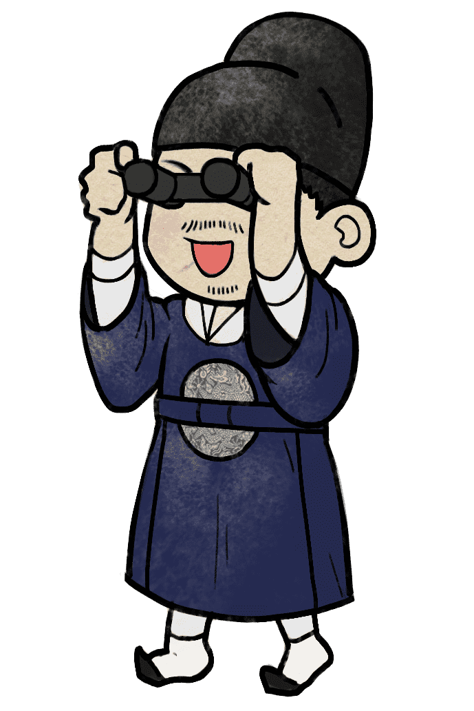
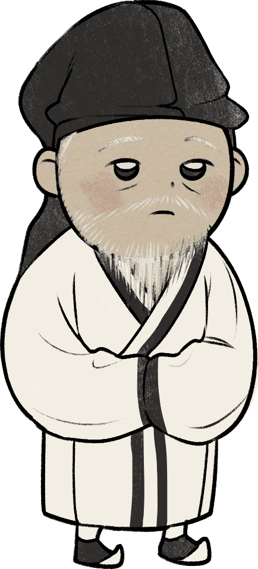

성품 유형지
명월 황진이
"조선 최고의 여류 시인"

당신은 황진이와 같은 유형으로, 예술적 분야에 천재적인 재능을 보이는 편이며 음악, 문학, 그림 등 다양한 영역에서 두각을 보일 잠재력을 가지고 있습니다.
그녀가 읊은 ‘청산리 벽계수야’ 등의 시조처럼 당신 또한 표현력이 남다르며 창의적인 발상에도 뛰어난 감각을 펼치며 그것을 자유롭게 풀어가는 것에도 거침이 없는 편입니다.
그리고 가치관 중심적이기 때문에 자신의 내적 신념에 집중하는 편입니다. 비록 그녀가 기생의 신분이었음에도 이상향을 꿈꿨던 것처럼 당신도 자신만의 이상적 세계를 놓치지 않고 꾸준히
갈망하며 만들어 나가려고 노력하는 편입니다.
또한 그녀가 양반, 왕족, 유명 학자들의 콧대를 누르며 위선적인 태도에 반항하고 진심어린 마음을 추구했던 것처럼, 당신도 진정성을 중시하며 가식적인 것에 크게 거부감을 느끼고,
자신의 마음을 표현하는 것에 다소 부끄러움을 느끼더라도 진정성 있는 태도로 사람을 대하는 것을 중시합니다.
황진이는 서경덕의 별세 후 얼마 안 가 세상을 등질 정도로 그에게 빠지고 몰두했었습니다. 이처럼 특정 한 사람 또는 몇몇 소수의 사람에게 특히나 열정적으로 대하고 아끼는 것 또한
당신과 유사한 부분입니다.
다음
성품 유형지
① 움직이지 않는 상여
그녀가 열다섯일 무렵 동네 총각이 황진이를 보고 첫눈에 반해 깊은 상사병을 앓게 되었고 중매를 넣었지만 결국 거절되어 안타깝게도 세상을 뜨게 되었습니다. 헌데 장례를 치르던 도중 상여가 도통 황진이의 집 앞에서 움직일 생각을 하지 않았던 것입니다. 이때 황진이가 나타나 관을 어루만져주고 위로하자 그제야 상여가 움직였다고 합니다.② 풍악과 함께 한 상여
그녀는 사제지간으로 지내던 서경덕이 세상을 떠나자 기생을 그만두고 은둔 생활을 하다 생을 마감했습니다. 그리고 세상을 떠나기 전 자신이 세상을 떠난 뒤에는 곡을 하지 말고 상여가 떠날 때에는 풍악을 울리며 살아생전 세상을 어지럽힌 죄가 있으니 관도 쓰지 말고 송도 밖의 사천 모래밭에 그냥 던져서 까마귀밥이 되게 하여 경계로 삼으라는 유언이 전설로 전해집니다.
위인소개
황진이는 조선 전기의 시인이자 예술가로 허난설헌과 더불어 조선의 최고 여류시인으로 꼽힙니다.
뛰어난 재능으로 여러 걸작 시와 시조들을 남겼는데 ‘청산리 벽계수야’와 ‘동짓달 기나긴 밤을’과 같은 시조들은 현대인들에게도 잘 알려져 있습니다.
또한 그녀는 재능이 출중하고 용모도 수려하여 당시의 저명한 문인, 학자들과 교류하며 명성을 얻었습니다.
그녀는 10년 동안 수도에 정진하여 생불이라 불리던 ’천마산 지족암‘의 ’지족선사‘라는 승려를 유혹하여 파계시키기도 하였으며, 대쪽 같은 성품으로 황진이에게도
흔들리지 않았던 대학자 서경덕을 본받아 사제지간으로 지내며 도와 학문을 닦았다고 합니다.

천생연분
소현세자

견원지간
영보 송시열
소현세자 : 서로가 서로를 있는 그대로 아껴주며, 서로의 존재와 가치를 인정하는 최상의 궁합으로 쿵하면
짝하는, 서로 잘 통하는 관계입니다.
영보 송시열 : 관계를 놓을 때까지 계속해서 충돌하는 최악의 궁합입니다. 하지만 마음을 비운다면 오히려
편안해질 수 있습니다.
이전